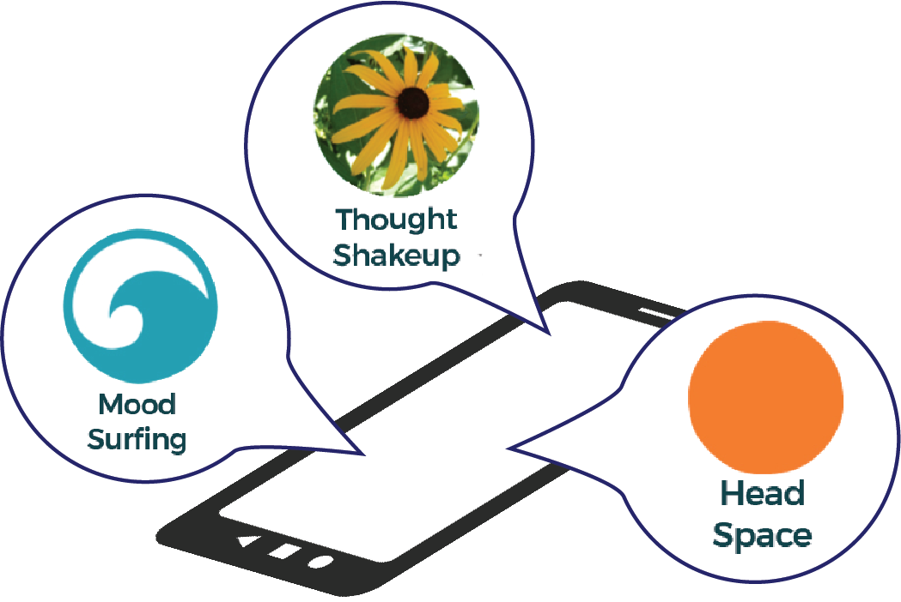

Team members
Faculty
Susan Murphy (Harvard)
James M. Rehg (Georgia Tech)
Inbal Nahum-Shani (Michigan)
Mustafa al'Absi (Minnesota)
Santosh Kumar (Memphis)
Gregory Abowd (Georgia Tech)
Ida Sim (UC-San Francisco)
Bonnie Spring (Northwestern)
Students
Peng Liao (Michigan)
Walter Dempsey (Harvard)
Just-in-Time-Adaptive Interventions

Just-in-Time Adaptive Interventions (JITAIs) are mHealth technologies that aim to deliver the right intervention components at the right times and locations to optimally support individuals’ health behaviors.
These interventions are adapted to the dynamics of a person’s “emotional, social, physical and contextual state, so as to prevent negative outcomes and promote the adoption and maintenance of healthy behaviors.” [1]
JITAIs are designed to help people make the right decision “in the moment” so that they have an impact in the near future. Because the development of mHealth technologies is progressing at a faster pace than the science to evaluate their efficacy and validity, new methods need to be developed to test these technologies. mHealth researchers have been using a micro-randomized trial design to test the effects of JITAIs. [2]
MD2K software uses three apps for interventions: Mood Surfing and Thought Shakeup, developed internally, and Head Space, which is commercially available. Mood Surfing is to guide one's mind away from negative thoughts; Thought Shakeup is designed to help the user reframe negative thoughts that may contribute to stress, and Head Space offers modules that help regulate stress.
[1] Nahum-Shani, S., Smith, S. N., Tewari, A., Witkiewitz, K., Collins, L. M., Spring, B., & Murphy, S. A. (2014). Just-in-Time adaptive interventions (JITAIs): An organizing framework for ongoing health behavior support. (Technical Report No. 14-126). University Park, PA: The Methodology Center, Penn State.
[2] P. Liao; P. Klasnja; A. Tewari; S.A. Murphy: Micro-Randomized Trials in mHealth. In: Statistics in Medicine, 2015.
Publications
Bo-Jhang Ho, Bharathan Balaji, Mehmet Koseoglu and Mani Srivastava.
Nurture: Notifying Users at the Right Time Using Reinforcement Learning. In Proceedings of the 2018 ACM International Joint Conference and 2018 International Symposium on Pervasive and Ubiquitous Computing and Wearable Computers. 2018, 1194–1201. URL, DOI BibTeX@inproceedings{Ho2018, author = "Ho, Bo-Jhang and Balaji, Bharathan and Koseoglu, Mehmet and Srivastava, Mani", title = "Nurture: Notifying Users at the Right Time Using Reinforcement Learning", booktitle = "Proceedings of the 2018 ACM International Joint Conference and 2018 International Symposium on Pervasive and Ubiquitous Computing and Wearable Computers", year = 2018, series = "UbiComp '18", pages = "1194--1201", address = "New York, NY, USA", publisher = "ACM", __markedentry = "[bbwillms:6]", abstract = "User interaction is an essential part of many mobile devices such as smartphones and wrist bands. Only by interacting with the user can these devices deliver services, enable proper configurations, and learn user preferences. Push notifications are the primary method used to attract user attention in modern devices. However, these notifications can be ineffective and even irritating if they prompt the user at an inappropriate time. The discontent is exacerbated by the large number of applications that target limited user attention. We propose a reinforcement learning-based personalization technique, called Nurture, which automatically identifies the appropriate time to send notifications for a given user context. Through simulations with the crowd-sourcing platform Amazon Mechanical Turk, we show that our approach successfully learns user preferences and significantly improves the rate of notification responses.", acmid = 3274107, doi = "10.1145/3267305.3274107", isbn = "978-1-4503-5966-5", keywords = "Interruptibility, Push notification, Reinforcement learning, User interaction", location = "Singapore, Singapore", numpages = 8, url = "http://doi.acm.org/10.1145/3267305.3274107" }Mashfiqui Rabbi, Meredith Philyaw-Kotov, Jinseok Lee, Anthony Mansour, Laura Dent, Xiaolei Wang, Rebecca Cunningham, Erin Bonar, Inbal Nahum-Shani, Predrag Klasnja, Maureen Walton and Susan Murphy.
SARA: A Mobile App to Engage Users in Health Data Collection. In Proceedings of the 2017 ACM International Joint Conference on Pervasive and Ubiquitous Computing and Proceedings of the 2017 ACM International Symposium on Wearable Computers. 2017, 781–789. URL, DOI BibTeX@inproceedings{Rabbi:2017:SMA:3123024.3125611, author = "Rabbi, Mashfiqui and Philyaw-Kotov, Meredith and Lee, Jinseok and Mansour, Anthony and Dent, Laura and Wang, Xiaolei and Cunningham, Rebecca and Bonar, Erin and Nahum-Shani, Inbal and Klasnja, Predrag and Walton, Maureen and Murphy, Susan", title = "SARA: A Mobile App to Engage Users in Health Data Collection", booktitle = "Proceedings of the 2017 ACM International Joint Conference on Pervasive and Ubiquitous Computing and Proceedings of the 2017 ACM International Symposium on Wearable Computers", year = 2017, series = "UbiComp '17", pages = "781--789", address = "New York, NY, USA", publisher = "ACM", abstract = "Despite the recent progress in sensor technologies, many relevant health data can be only captured with manual input (e.g., food intake, stress appraisal, subjective emotion, substance use). A common problem of manual logging is that users often disengage within a short time because of high burden. In this work, we propose SARA, a novel app to engage users with ongoing tracking using timely rewards thereby reinforcing users for data input. SARA is developed for adolescents and emerging adults at risk for substance abuse. The rewards in SARA are designed to be developmentally and culturally appropriate to the target demographic and are theoretically grounded in the behavioral science literature. In this paper, we describe SARA and its rewards to increase data collection. We also briefly discuss future plans to evaluate SARA and develop just in time adaptive interventions for engagement and behavior change.", acmid = 3125611, doi = "10.1145/3123024.3125611", isbn = "978-1-4503-5190-4", keywords = "engagement, just-in-time-adaptive-interventions, substance use", location = "Maui, Hawaii", numpages = 9, url = "https://md2k.org/images/papers/jitai/sara-rabbi.pdf" }Blake Wagner III, Elaine Liu, Steven D Shaw, Gleb Iakovlev, Linlu Zhou, Christina Harrington, Gregory Abowd, Carolyn Yoon, Santosh Kumar, Susan Murphy, Bonnie Spring and Inbal Nahum-Shani.
Ewrapper: Operationalizing Engagement Strategies in mHealth. In Proceedings of the 2017 ACM International Joint Conference on Pervasive and Ubiquitous Computing and Proceedings of the 2017 ACM International Symposium on Wearable Computers. 2017, 790–798. URL, DOI BibTeX@inproceedings{Wagner:2017:EWO:3123024.3125612, author = "Wagner,III, Blake and Liu, Elaine and Shaw, Steven D. and Iakovlev, Gleb and Zhou, Linlu and Harrington, Christina and Abowd, Gregory and Yoon, Carolyn and Kumar, Santosh and Murphy, Susan and Spring, Bonnie and Nahum-Shani, Inbal", title = "Ewrapper: Operationalizing Engagement Strategies in mHealth", booktitle = "Proceedings of the 2017 ACM International Joint Conference on Pervasive and Ubiquitous Computing and Proceedings of the 2017 ACM International Symposium on Wearable Computers", year = 2017, series = "UbiComp '17", pages = "790--798", address = "New York, NY, USA", publisher = "ACM", abstract = "The advancement of digital technologies particularly in the domain of mobile health (mHealth) holds great promise in the promotion of health behavior. However, keeping users engaged remains a central challenge. This paper proposes a novel approach to address this issue by supplementing existing and future mHealth applications with an engagement wrapper – a collection of engagement strategies integrated into a single, coherent model. The engagement wrapper is operationalized within the format of an ambient display on the lock screen of mobile devices.", acmid = 3125612, doi = "10.1145/3123024.3125612", isbn = "978-1-4503-5190-4", keywords = "engagement, just-in-time adaptive interventions, mobile health (mHealth)", location = "Maui, Hawaii", numpages = 9, url = "https://md2k.org/images/papers/jitai/ewrapper-wagner.pdf" }Walter H Dempsey, Alexander Moreno, Christy K Scott, Michael L Dennis, David H Gustafson, Susan A Murphy and James M Rehg.
iSurvive: An Interpretable, Event-time Prediction Model for mHealth. In Doina Precup and Yee Whye Teh (eds.). Proceedings of the 34th International Conference on Machine Learning 70. 2017, 970–979. URL, DOI BibTeX@inproceedings{pmlr-v70-dempsey17a, author = "Walter H. Dempsey and Alexander Moreno and Christy K. Scott and Michael L. Dennis and David H. Gustafson and Susan A. Murphy and James M. Rehg", title = "i{S}urvive: An Interpretable, Event-time Prediction Model for m{H}ealth", booktitle = "Proceedings of the 34th International Conference on Machine Learning", year = 2017, editor = "Doina Precup and Yee Whye Teh", volume = 70, series = "Proceedings of Machine Learning Research", pages = "970--979", address = "International Convention Centre, Sydney, Australia", publisher = "PMLR", abstract = "An important mobile health (mHealth) task is the use of multimodal data, such as sensor streams and self-report, to construct interpretable time-to-event predictions of, for example, lapse to alcohol or illicit drug use. Interpretability of the prediction model is important for acceptance and adoption by domain scientists, enabling model outputs and parameters to inform theory and guide intervention design. Temporal latent state models are therefore attractive, and so we adopt the continuous time hidden Markov model (CT-HMM) due to its ability to describe irregular arrival times of event data. Standard CT-HMMs, however, are not specialized for predicting the time to a future event, the key variable for mHealth interventions. Also, standard emission models lack a sufficiently rich structure to describe multimodal data and incorporate domain knowledge. We present iSurvive, an extension of classical survival analysis to a CT-HMM. We present a parameter learning method for GLM emissions and survival model fitting, and present promising results on both synthetic data and an mHealth drug use dataset.", doi = "http://proceedings.mlr.press/v70/dempsey17a.html", file = "dempsey17a.pdf:http\://proceedings.mlr.press/v70/dempsey17a/dempsey17a.pdf:PDF", url = "https://md2k.org/images/papers/jitai/dempsey17a.pdf" }Daniel Almirall, Charlotte DiStefano, Ya-Chih Chang, Stephanie Shire, Ann Kaiser, Xi Lu, Inbal Nahum-Shani, Rebecca Landa, Pamela Mathy and Connie Kasari.
Longitudinal Effects of Adaptive Interventions With a Speech-Generating Device in Minimally Verbal Children With ASD.. Journal of clinical child and adolescent psychology : the official journal for the Society of Clinical Child and Adolescent Psychology, American Psychological Association, Division 53 45:442-56, 2016. BibTeX@article{Almirall2016, author = "Almirall, Daniel and DiStefano, Charlotte and Chang, Ya-Chih and Shire, Stephanie and Kaiser, Ann and Lu, Xi and Nahum-Shani, Inbal and Landa, Rebecca and Mathy, Pamela and Kasari, Connie", title = "Longitudinal Effects of Adaptive Interventions With a Speech-Generating Device in Minimally Verbal Children With ASD.", journal = "Journal of clinical child and adolescent psychology : the official journal for the Society of Clinical Child and Adolescent Psychology, American Psychological Association, Division 53", year = 2016, volume = 45, pages = "442-56", month = "Jul-Aug", abstract = "There are limited data on the effects of adaptive social communication interventions with a speech-generating device in autism. This study is the first to compare growth in communications outcomes among three adaptive interventions in school-age children with autism spectrum disorder (ASD) who are minimally verbal. Sixty-one children, ages 5-8 years, participated in a sequential, multiple-assignment randomized trial (SMART). All children received a developmental behavioral communication intervention: joint attention, symbolic play, engagement and regulation (JASP) with enhanced milieu teaching (EMT). The SMART included three 2-stage, 24-week adaptive interventions with different provisions of a speech-generating device (SGD) in the context of JASP+EMT. The first adaptive intervention, with no SGD, initially assigned JASP+EMT alone, then intensified JASP+EMT for slow responders. In the second adaptive intervention, slow responders to JASP+EMT were assigned JASP+EMT+SGD. The third adaptive intervention initially assigned JASP+EMT+SGD; then intensified JASP+EMT+SGD for slow responders. Analyses examined between-group differences in change in outcomes from baseline to Week 36. Verbal outcomes included spontaneous communicative utterances and novel words. Nonlinguistic communication outcomes included initiating joint attention and behavior regulation, and play. The adaptive intervention beginning with JASP+EMT+SGD was estimated as superior. There were significant (p < .05) between-group differences in change in spontaneous communicative utterances and initiating joint attention. School-age children with ASD who are minimally verbal make significant gains in communication outcomes with an adaptive intervention beginning with JASP+EMT+SGD. Future research should explore mediators and moderators of the adaptive intervention effects and second-stage intervention options that further capitalize on early gains in treatment.", address = "England", article-doi = "10.1080/15374416.2016.1138407", completed = 20170627, electronic-issn = "1537-4424", electronic-publication = 20160308, grantno = "R03 MH097954/MH/NIMH NIH HHS/United States", history = "2017/06/28 06:00 [medline]", issue = 4, keywords = "Attention/physiology, Autism Spectrum Disorder/diagnosis/*psychology/*therapy, Child, Child Development Disorders, Pervasive/diagnosis/*psychology/*therapy, Child, Preschool, Communication, Communication Aids for Disabled/*trends/utilization, Female, Humans, Longitudinal Studies, Male, Speech/physiology, Treatment Outcome, Verbal Behavior/*physiology", language = "eng", linking-issn = "1537-4416", location-id = "10.1080/15374416.2016.1138407 [doi]", manuscript-id = "NIHMS784398", nlm-unique-id = 101133858, owner = "NLM", publication-status = "ppublish", revised = 20170714, source = "J Clin Child Adolesc Psychol. 2016 Jul-Aug;45(4):442-56. doi: 10.1080/15374416.2016.1138407. Epub 2016 Mar 8.", status = "MEDLINE", subset = "IM", title-abbreviation = "J Clin Child Adolesc Psychol" }Inbal Nahum-Shani, Ashkan Ertefaie, Xi Lu, Kevin G Lynch, James R McKay, David Oslin and Daniel Almirall.
A SMART Data Analysis Method for Constructing Adaptive Treatment Strategies for Substance Use Disorders. Addiction, pages n/a–n/a, 2016. URL, DOI BibTeX@article{ADD:ADD13743, author = "Inbal Nahum-Shani and Ashkan Ertefaie and Xi Lu and Kevin G. Lynch and James R. McKay and David Oslin and Daniel Almirall", title = "A SMART Data Analysis Method for Constructing Adaptive Treatment Strategies for Substance Use Disorders", journal = "Addiction", year = 2016, pages = "n/a--n/a", issn = "1360-0443", note = "ADD-16-0011.R2", abstract = "Aims To demonstrate how Q-learning, a novel data analysis method, can be used with data from a sequential, multipleassignment, randomized trial (SMART) to construct empirically an adaptive treatment strategy (ATS) that is more tailoredthan the ATSs already embedded in a SMART. Method We use Q-learning with data from the Extending Treatment Ef-fectiveness of Naltrexone (ExTENd) SMART (N = 250) to construct empirically an ATS employing naltrexone, behavioralintervention, and telephone disease management to reduce alcohol consumption over 24 weeks in alcohol dependent in-dividuals.Results Q-learning helped to identify a subset of individuals who, despite showing early signs of response tonaltrexone, require additional treatment to maintain progress. Conclusions Q-learning can inform the developmentof more cost-effective, adaptive treatment strategies for treating substance use disorders.", doi = "10.1111/add.13743", keywords = "Adaptive intervention, alcohol dependence, multiple assignment, naltrexone medication, Q-learning, randomized trial (SMART), sequential", pubstate = "forthcoming", tppubtype = "article", url = "https://md2k.org/images/papers/jitai/nahum-shani_addiction.pdf" }Kevin Patrick, Eric B Hekler, Deborah Estrin, David C Mohr, Heleen Riper, David Crane, Job Godino and William T Riley.
The Pace of Technologic Change: Implications for Digital Health Behavior Intervention Research. American Journal of Preventive Medicine 51(5):816 - 824, 2016. URL, DOI BibTeX@article{Patrick2016816, author = "Kevin Patrick and Eric B. Hekler and Deborah Estrin and David C. Mohr and Heleen Riper and David Crane and Job Godino and William T. Riley", title = "The Pace of Technologic Change: Implications for Digital Health Behavior Intervention Research", journal = "American Journal of Preventive Medicine", year = 2016, volume = 51, number = 5, pages = "816 - 824", issn = "0749-3797", abstract = "This paper addresses the rapid pace of change in the technologies that support digital interventions; the complexity of the health problems they aim to address; and the adaptation of scientific methods to accommodate the volume, velocity, and variety of data and interventions possible from these technologies. Information, communication, and computing technologies are now part of every societal domain and support essentially every facet of human activity. Ubiquitous computing, a vision articulated fewer than 30 years ago, has now arrived. Simultaneously, there is a global crisis in health through the combination of lifestyle and age-related chronic disease and multiple comorbidities. Computationally intensive health behavior interventions may be one of the most powerful methods to reduce the consequences of this crisis, but new methods are needed for health research and practice, and evidence is needed to support their widespread use. The challenges are many, including a reluctance to abandon timeworn theories and models of health behavior—and health interventions more broadly—that emerged in an era of self-reported data; medical models of prevention, diagnosis, and treatment; and scientific methods grounded in sparse and expensive data. There are also many challenges inherent in demonstrating that newer approaches are, indeed, effective. Potential solutions may be found in leveraging methods of research that have been shown to be successful in other domains, particularly engineering. A more “agile science� may be needed that streamlines the methods through which elements of health interventions are shown to work or not, and to more rapidly deploy and iteratively improve those that do. There is much to do to advance the issues discussed in this paper, and the papers in this theme issue. It remains an open question whether interventions based in these new models and methods are, in fact, equally if not more efficacious as what is available currently. Economic analyses of these new approaches are needed because assumptions of net worth compared to other approaches are just that, assumptions. Human-centered design research is needed to ensure that users ultimately benefit. Finally, a translational research agenda will be needed, as the status quo will likely be resistant to change.", doi = "http://dx.doi.org/10.1016/j.amepre.2016.05.001", pubstate = "published", tppubtype = "article", url = "https://md2k.org/images/papers/jitai/AmJPrevMed_Patrick2016.pdf" }Lucy Yardley, Bonnie J Spring, Heleen Riper, Leanne Morrisonand David G H Crane, Kristina Curtis, Gina C Merchant, Felix Naughton and Ann Blandford.
Understanding and promoting effective engagement with digital behavior change interventions. American Journal of Preventive Medicine 51(5):833–842, 2016. URL BibTeX@article{yardley2016understanding, author = "Lucy Yardley and Bonnie J Spring and Heleen Riper and Leanne G Morrisonand David H Crane and Kristina Curtis and Gina C Merchant and Felix Naughton and Ann Blandford", title = "Understanding and promoting effective engagement with digital behavior change interventions", journal = "American Journal of Preventive Medicine", year = 2016, volume = 51, number = 5, pages = "833--842", abstract = "This paper is one in a series developed through a process of expert consensus to provide an overview of questions of current importance in research into engagement with digital behavior change interventions, identifying guidance based on research to date and priority topics for future research. The first part of this paper critically reflects on current approaches to conceptualizing and measuring engagement. Next, issues relevant to promoting effective engagement are discussed, including how best to tailor to individual needs and combine digital and human support. A key conclusion with regard to conceptualizing engagement is that it is important to understand the relationship between engagement with the digital intervention and the desired behavior change. This paper argues that it may be more valuable to establish and promote “effective engagement,” rather than simply more engagement, with “effective engagement” defined empirically as sufficient engagement with the intervention to achieve intended outcomes. Appraisal of the value and limitations of methods of assessing different aspects of engagement highlights the need to identify valid and efficient combinations of measures to develop and test multidimensional models of engagement. The final section of the paper reflects on how interventions can be designed to fit the user and their specific needs and context. Despite many unresolved questions posed by novel and rapidly changing technologies, there is widespread consensus that successful intervention design demands a user-centered and iterative approach to development, using mixed methods and in-depth qualitative research to progressively refine the intervention to meet user requirements.", publisher = "Elsevier", pubstate = "published", tppubtype = "article", url = "https://md2k.org/images/papers/jitai/AmJPrevMed_Spring2016.pdf" }Inbal Nahum-Shani, Shawna N Smith, Bonnie J Spring, Linda M Collins, Katie Witkiewitz, Ambuj Tewari and Susan A Murphy.
Just-in-Time Adaptive Interventions (JITAIs) in Mobile Health: Key Components and Design Principles for Ongoing Health Behavior Support. Annals of Behavioral Medicine, pages 1–17, 2016. URL, DOI BibTeX@article{Nahum-Shani2016, author = "Inbal Nahum-Shani and Shawna N. Smith and Bonnie J. Spring and Linda M. Collins and Katie Witkiewitz and Ambuj Tewari and Susan A. Murphy", title = "Just-in-Time Adaptive Interventions (JITAIs) in Mobile Health: Key Components and Design Principles for Ongoing Health Behavior Support", journal = "Annals of Behavioral Medicine", year = 2016, pages = "1--17", issn = "1532-4796", abstract = "Background. The just-in-time adaptive intervention (JITAI) is an intervention design aiming to provide the right type/amount of support, at the right time, by adapting to an individual’s changing internal and contextual state. The availability of increasingly powerful mobile and sensing technologies underpins the use of JITAIs to support health behavior, as in such a setting an individual’s state can change rapidly, unexpectedly, and in his/her natural environment. Purpose. Despite the increasing use and appeal of JITAIs, a major gap exists between the growing technological capabilities for delivering JITAIs and research on the development and evaluation of these interventions. Many JITAIs have been developed with minimal use of empirical evidence, theory, or accepted treatment guidelines. Here, we take an essential first step towards bridging this gap. Methods. Building on health behavior theories and the extant literature on JITAIs, we clarify the scientific motivation for JITAIs, define their fundamental components, and highlight design principles related to these components. Examples of JITAIs from various domains of health behavior research are used for illustration. Conclusion. As we enter a new era of technological capacity for delivering JITAIs, it is critical that researchers develop sophisticated and nuanced health behavior theories capable of guiding the construction of such interventions. Particular attention has to be given to better understanding the implica-tions of providing timely and ecologically sound support for intervention adherence and retention.", doi = "10.1007/s12160-016-9830-8", pubstate = "published", tppubtype = "article", url = "https://md2k.org/images/papers/jitai/BehavMed_Nahum-Shani16.pdf" }Korkut Bekiroglu, Constantino Lagoa, Susan A Murphy and Stephanie T Lanza.
Control Engineering Methods for the Design of Robust Behavioral Treatments. IEEE Transactions on Control Systems Technology PP(99):1-12, 2016. URL, DOI BibTeX@article{7501575, author = "Korkut Bekiroglu and Constantino Lagoa and Susan A. Murphy and Stephanie T. Lanza", title = "Control Engineering Methods for the Design of Robust Behavioral Treatments", journal = "IEEE Transactions on Control Systems Technology", year = 2016, volume = "PP", number = 99, pages = "1-12", issn = "1063-6536", abstract = "In this paper, a robust control approach is used to address the problem of adaptive behavioral treatment design. Human behavior (e.g., smoking and exercise) and reactions to treatment are complex and depend on many unmeasurable external stimuli, some of which are unknown. Thus, it is crucial to model human behavior over many subject responses. We propose a simple (low order) uncertain affine model subject to uncertainties whose response covers the most probable behavioral responses. The proposed model contains two different types of uncertainties: uncertainty of the dynamics and external perturbations that patients face in their daily life. Once the uncertain model is defined, we demonstrate how least absolute shrinkage and selection operator (lasso) can be used as an identification tool. The lasso algorithm provides a way to directly estimate a model subject to sparse perturbations. With this estimated model, a robust control algorithm is developed, where one relies on the special structure of the uncertainty to develop efficient optimization algorithms. This paper concludes by using the proposed algorithm in a numerical experiment that simulates treatment for the urge to smoke.", doi = "10.1109/TCST.2016.2580661", keywords = "Adaptation models;Algorithm design and analysis;Design methodology;Optimization;Robust control;Robustness;Uncertainty;Adaptive treatment design;adaptive-robust intervention;behavioral treatment design;min-max structured robust optimization;receding horizon control.", pubstate = "published", tppubtype = "article", url = "https://md2k.org/images/papers/jitai/ieee_murphy2016.pdf" }Audrey Boruvka, Daniel Almirall, Katie Witkiewitz and Susan A Murphy.
Assessing Time-Varying Causal Effect Moderation in Mobile Health. arXiv preprint arXiv:1601.00237, 2016. URL BibTeX@article{boruvka2016assessing, author = "Audrey Boruvka and Daniel Almirall and Katie Witkiewitz and Susan A Murphy", title = "Assessing Time-Varying Causal Effect Moderation in Mobile Health", journal = "arXiv preprint arXiv:1601.00237", year = 2016, abstract = "In mobile health interventions aimed at behavior change and maintenance, treatments are provided in real time to manage current or impending high risk situations or promote healthy behaviors in near real time. Currently there is great scientific interest in developing data analysis approaches to guide the development of mobile interventions. In particular data from mobile health studies might be used to examine effect moderators — individual characteristics, time-varying context or past treatment response that moderate the effect of current treatment on a subsequent response. This paper introduces a formal definition for moderated effects in terms of potential outcomes, a definition that is particularly suited to mobile interventions, where treatment occasions are numerous, individuals are not always available for treatment, and potential moderators might be influenced by past treatment. Methods for estimating moderated effects are developed and compared. The proposed approach is illustrated using BASICS-Mobile, a smartphone-based intervention designed to curb heavy drinking and smoking among college students.", pubstate = "published", tppubtype = "article", url = "https://md2k.org/images/papers/jitai/boruvka033117.pdf" }C Yang, J P Maher and D E Conroy.
Implementation of Behavior Change Techniques in Mobile Applications for Physical Activity.. American Journal of Preventive Medicine, 2015. URL, DOI BibTeX@article{Yang2015a, author = "C. Yang and J.P. Maher and D.E. Conroy", title = "Implementation of Behavior Change Techniques in Mobile Applications for Physical Activity.", journal = "American Journal of Preventive Medicine", year = 2015, abstract = "Mobile applications (apps) for physical activity are popular and hold promise for promoting behavior change and reducing non-communicable disease risk. App marketing materials describe a limited number of behavior change techniques (BCTs), but apps may include unmarketed BCTs, which are important as well.To characterize the extent to which BCTs have been implemented in apps from a systematic user inspection of apps.Top-ranked physical activity apps (N=100) were identified in November 2013 and analyzed in 2014. BCTs were coded using a contemporary taxonomy following a user inspection of apps.Users identified an average of 6.6 BCTs per app and most BCTs in the taxonomy were not represented in any apps. The most common BCTs involved providing social support, information about others' approval, instructions on how to perform a behavior, demonstrations of the behavior, and feedback on the behavior. A latent class analysis of BCT configurations revealed that apps focused on providing support and feedback as well as support and education.Contemporary physical activity apps have implemented a limited number of BCTs and have favored BCTs with a modest evidence base over others with more established evidence of efficacy (e.g., social media integration for providing social support versus active self-monitoring by users). Social support is a ubiquitous feature of contemporary physical activity apps and differences between apps lie primarily in whether the limited BCTs provide education or feedback about physical activity.", doi = "http://dx.doi.org/10.1016/j.amepre.2014.10.010", institution = "Department of Preventive Medicine, Northwestern University, Chicago, Illinois. Electronic address: conroy@northwestern.edu.", keywords = "BCT, behavior change techniques, measuring activity, mobile apps, taxonomy", pubstate = "published", tppubtype = "article", url = "https://md2k.org/images/papers/jitai/amjprevmed_conroy.pdf" }M Rabbi, A Pfammatter, M Zhang, B Spring and T Choudhury.
Automated Personalized Feedback for Physical Activity and Dietary Behavior Change With Mobile Phones: A Randomized Controlled Trial on Adults. Journal of Medical Internet Research 3(2):e42, 2015. URL, DOI BibTeX@article{Rabbi2015, author = "M Rabbi and A Pfammatter and M Zhang and B Spring and T Choudhury", title = "Automated Personalized Feedback for Physical Activity and Dietary Behavior Change With Mobile Phones: A Randomized Controlled Trial on Adults", journal = "Journal of Medical Internet Research", year = 2015, volume = 3, number = 2, pages = "e42", abstract = "Background: A dramatic rise in health-tracking apps for mobile phones has occurred recently. Rich user interfaces make manual logging of users’ behaviors easier and more pleasant, and sensors make tracking effortless. To date, however, feedback technologies have been limited to providing overall statistics, attractive visualization of tracked data, or simple tailoring based on age, gender, and overall calorie or activity information. There are a lack of systems that can perform automated translation of behavioral data into specific actionable suggestions that promote healthier lifestyle without any human involvement. Objective: MyBehavior, a mobile phone app, was designed to process tracked physical activity and eating behavior data in order to provide personalized, actionable, low-effort suggestions that are contextualized to the user’s environment and previous behavior. This study investigated the technical feasibility of implementing an automated feedback system, the impact of the suggestions on user physical activity and eating behavior, and user perceptions of the automatically generated suggestions. Methods: MyBehavior was designed to (1) use a combination of automatic and manual logging to track physical activity (eg, walking, running, gym), user location, and food, (2) automatically analyze activity and food logs to identify frequent and nonfrequent behaviors, and (3) use a standard machine-learning, decision-making algorithm, called multi-armed bandit (MAB), to generate personalized suggestions that ask users to either continue, avoid, or make small changes to existing behaviors to help users reach behavioral goals. We enrolled 17 participants, all motivated to self-monitor and improve their fitness, in a pilot study of MyBehavior. In a randomized two-group trial, investigators randomly assigned participants to receive either MyBehavior’s personalized suggestions (n=9) or nonpersonalized suggestions (n=8), created by professionals, from a mobile phone app over 3 weeks. Daily activity level and dietary intake was monitored from logged data. At the end of the study, an in-person survey was conducted that asked users to subjectively rate their intention to follow MyBehavior suggestions. Results: In qualitative daily diary, interview, and survey data, users reported MyBehavior suggestions to be highly actionable and stated that they intended to follow the suggestions. MyBehavior users walked significantly more than the control group over the 3 weeks of the study (P=.05). Although some MyBehavior users chose lower-calorie foods, the between-group difference was not significant (P=.15). In a poststudy survey, users rated MyBehavior’s personalized suggestions more positively than the nonpersonalized, generic suggestions created by professionals (P<.001). Conclusions: MyBehavior is a simple-to-use mobile phone app with preliminary evidence of efficacy. To the best of our knowledge, MyBehavior represents the first attempt to create personalized, contextualized, actionable suggestions automatically from self-tracked information (ie, manual food logging and automatic tracking of activity). Lessons learned about the difficulty of manual logging and usability concerns, as well as future directions, are discussed.", doi = "10.2196/mhealth.4160", keywords = "mobile health; mHealth; mobile phone sensing; smart systems; context-aware systems; physical activity; self-management; personal health care; machine learning; artificial intelligence", pubstate = "published", tppubtype = "article", url = "../images/papers/jitai/jmir_spring.pdf" }P Klasnja, E B Hekler, S Shiffman, A Boruvka, D Almirall, A Tewari and S A Murphy.
Micro-randomized trials: An experimental design for developing just-in-time adaptive interventions. Health Psychology 34 (suppl):1220-1228, 2015. URL, DOI BibTeX@article{Klasnja2015, author = "P. Klasnja and E.B. Hekler and S. Shiffman and A. Boruvka and D. Almirall and A. Tewari and S.A. Murphy", title = "Micro-randomized trials: An experimental design for developing just-in-time adaptive interventions", journal = "Health Psychology", year = 2015, volume = "34 (suppl)", pages = "1220-1228", abstract = "Objective: This article presents an experimental design, the microrandomized trial, developed to support optimization of just-in-time adaptive interventions (JITAIs). JITAIs are mHealth technologies that aim to deliver the right intervention components at the right times and locations to optimally support individuals’ health behaviors. Microrandomized trials offer a way to optimize such interventions by enabling modeling of causal effects and time-varying effect moderation for individual intervention components within a JITAI. Method: The article describes the microrandomized trial design, enumerates research questions that this experimental design can help answer, and provides an overview of the data analyses that can be used to assess the causal effects of studied intervention components and investigate time-varying moderation of those effects. Results: Microrandomized trials enable causal modeling of proximal effects of the randomized intervention components and assessment of time-varying moderation of those effects. Conclusion: Microrandomized trials can help researchers understand whether their interventions are having intended effects, when and for whom they are effective, and what factors moderate the interventions’ effects, enabling creation of more effective JITAIs. (PsycINFO Database Record (c) 2015 APA, all rights reserved)", doi = "10.1037/hea0000305", keywords = "cardiac resynchronization therapy, Experimental design, Health Care Psychology, intervention, Mathematical Modeling, mobile devices, Technology, Telemedicine", pubstate = "published", tppubtype = "article", url = "https://md2k.org/images/papers/jitai/nihms732638_Klasnja.pdf" }Kristina Wilson, Ibrahim Senay, Marta Durantini, Flor Sánchez, Michael Hennessyand Bonnie Spring and Doloroes Albarracín.
When it comes to lifestyle recommendations, more is sometimes less. Psychological Bulletin 141(2):474-509, 2015. URL, DOI BibTeX@article{Wilson2015, author = "Kristina Wilson and Ibrahim Senay and Marta Durantini and Flor Sánchez and Michael Hennessyand Bonnie Spring and Doloroes Albarracín", title = "When it comes to lifestyle recommendations, more is sometimes less", journal = "Psychological Bulletin", year = 2015, volume = 141, number = 2, pages = "474-509", abstract = "A meta-analysis of 150 research reports summarizing the results of multiple behavior domain interventions examined theoretical predictions about the effects of the included number of recommendations on behavioral and clinical change in the domains of smoking, diet, and physical activity. The meta-analysis yielded 3 main conclusions. First, there is a curvilinear relation between the number of behavioral recommendations and improvements in behavioral and clinical measures, with a moderate number of recommendations producing the highest level of change. A moderate number of recommendations is likely to be associated with stronger effects because the intervention ensures the necessary level of motivation to implement the recommended changes, thereby increasing compliance with the goals set by the intervention, without making the intervention excessively demanding. Second, this curve was more pronounced when samples were likely to have low motivation to change, such as when interventions were delivered to nonpatient (vs. patient) populations, were implemented in nonclinic (vs. clinic) settings, used lay community (vs. expert) facilitators, and involved group (vs. individual) delivery formats. Finally, change in behavioral outcomes mediated the effects of number of recommended behaviors on clinical change. These findings provide important insights that can help guide the design of effective multiple behavior domain interventions. (PsycINFO Database Record (c) 2015 APA, all rights reserved)", doi = "http://dx.doi.org/10.1037/a0038295", keywords = "behavior, JITAI, lifestyle", pubstate = "published", tppubtype = "article", url = "https://md2k.org/images/papers/jitai/nihms-635817_wilson.pdf" }C A Pellegrini, A F Pfammatter, D E Conroy and B Spring.
Smartphone applications to support weight loss: current perspectives. Journal of Advanced Healthcare Technologies July 2015(1):13-22, 2015. URL BibTeX@article{Pelligrini2015, author = "C.A. Pellegrini and A.F. Pfammatter and D.E. Conroy and B. Spring", title = "Smartphone applications to support weight loss: current perspectives", journal = "Journal of Advanced Healthcare Technologies", year = 2015, volume = "July 2015", number = 1, pages = "13-22", abstract = "Lower cost alternatives are needed for the traditional in-person behavioral weight loss programs to overcome challenges of lowering the worldwide prevalence of overweight and obesity. Smartphones have become ubiquitous and provide a unique platform to aid in the delivery of a behavioral weight loss program. The technological capabilities of a smartphone may address certain limitations of a traditional weight loss program, while also reducing the cost and burden on participants, interventionists, and health care providers. Awareness of the advantages smartphones offer for weight loss has led to the rapid development and proliferation of weight loss applications (apps). The built-in features and the mechanisms by which they work vary across apps. Although there are an extraordinary number of a weight loss apps available, most lack the same magnitude of evidence-based behavior change strategies typically used in traditional programs. As features develop and new capabilities are identified, we propose a conceptual model as a framework to guide the inclusion of features that can facilitate behavior change and lead to reductions in weight. Whereas the conventional wisdom about behavior change asserts that more is better (with respect to the number of behavior change techniques involved), this model suggests that less may be more because extra techniques may add burden and adversely impact engagement. Current evidence is promising and continues to emerge on the potential of smartphone use within weight loss programs; yet research is unable to keep up with the rapidly improving smartphone technology. Future studies are needed to refine the conceptual model's utility in the use of technology for weight loss, determine the effectiveness of intervention components utilizing smartphone technology, and identify novel and faster ways to evaluate the ever-changing technology.", keywords = "Diet, obesity, Physical activity, Technology", pubstate = "published", tppubtype = "article", url = "https://md2k.org/images/papers/jitai/nihms709018_pellegrini.pdf" }Bonnie Spring, Abby C King, Sherry L Pagoto, Linda Van Horn and Jeffery D Fisher.
Fostering multiple healthy lifestyle behaviors for primary prevention of cancer. American Psychologist 70(2):75-90, 2015. URL, DOI BibTeX@article{Spring2015, author = "Bonnie Spring and Abby C. King and Sherry L. Pagoto and Linda Van Horn and Jeffery D. Fisher", title = "Fostering multiple healthy lifestyle behaviors for primary prevention of cancer", journal = "American Psychologist", year = 2015, volume = 70, number = 2, pages = "75-90", abstract = "The odds of developing cancer are increased by specific lifestyle behaviors (tobacco use, excess energy and alcohol intakes, low fruit and vegetable intake, physical inactivity, risky sexual behaviors, and inadequate sun protection) that are established risk factors for developing cancer. These behaviors are largely absent in childhood, emerge and tend to cluster over the life span, and show an increased prevalence among those disadvantaged by low education, low income, or minority status. Even though these risk behaviors are modifiable, few are diminishing in the population over time. We review the prevalence and population distribution of these behaviors and apply an ecological model to describe effective or promising healthy lifestyle interventions targeted to the individual, the sociocultural context, or environmental and policy influences. We suggest that implementing multiple health behavior change interventions across these levels could substantially reduce the prevalence of cancer and the burden it places on the public and the health care system. We note important still-unresolved questions about which behaviors can be intervened upon simultaneously in order to maximize positive behavioral synergies, minimize negative ones, and effectively engage underserved populations. We conclude that interprofessional collaboration is needed to appropriately determine and convey the value of primary prevention of cancer and other chronic diseases. (PsycINFO Database Record (c) 2015 APA, all rights reserved)", doi = "http://psycnet.apa.org/doi/10.1037/a0038806", editor = ". , http://dx.doi.org/10.1037/a0038806", keywords = ": cancer prevention, ecological model, health behavior, obesity, risk behavior, smoking", pubstate = "published", tppubtype = "article", url = "https://md2k.org/images/papers/jitai/nihms729492_spring.pdf" }P Liao, P Klasnja, A Tewari and S A Murphy.
Micro-Randomized Trials in mHealth. Statistics in Medicine, 2015. URL BibTeX@article{liao2015micro, author = "P. Liao and P. Klasnja and A. Tewari and S.A. Murphy", title = "Micro-Randomized Trials in mHealth", journal = "Statistics in Medicine", year = 2015, abstract = "The use and development of mobile interventions is experiencing rapid growth. In “just-in-time” mobile interventions, treatments are provided via a mobile device that are intended to help an individual make healthy decisions “in the moment,” and thus have a proximal, near future impact. Currently the development of mobile interventions is proceeding at a much faster pace than that of associated data science methods. A first step toward developing data-based methods is to provide an experimental design for use in testing the proximal effects of these just-in-time treatments. In this paper, we propose a “micro-randomized” trial design for this purpose. In a micro-randomized trial, treatments are sequentially randomized throughout the conduct of the study, with the result that each participant may be randomized at the 100s or 1000s of occasions at which a treatment might be provided. Further, we develop a test statistic for assessing the proximal effect of a treatment as well as an associated sample size calculator. We conduct simulation evaluations of the sample size calculator in various settings. Rules of thumb that might be used in designing the micro-randomized trial are discussed. This work is motivated by our collaboration on the HeartSteps mobile application designed to increase physical activity.", keywords = "mHealth, Mirco-randomized Trial, Sample Size Calculation", pubstate = "published", tppubtype = "article", url = "https://md2k.org/images/papers/jitai/nihms732638_Klasnja.pdf" }Donna Spruijt-Metz, Eric Hekler, Niilo Saranummi, Stephen Intille, Ilkka Korhonen, Wendy Nilsen, Daniel E Rivera, Bonnie Spring, Susan Michie, David A Asch, Alberto Sanna, Vicente Traver Salcedo, Rita Kukakfa and Misha Pavel.
Building new computational models to support health behavior change and maintenance: new opportunities in behavioral research. Translational Behavioral Medicine 5(3):335-346, 2015. URL, DOI BibTeX@article{raey, author = "Donna Spruijt-Metz and Eric Hekler and Niilo Saranummi and Stephen Intille and Ilkka Korhonen and Wendy Nilsen and Daniel E. Rivera and Bonnie Spring and Susan Michie and David A. Asch and Alberto Sanna and Vicente Traver Salcedo and Rita Kukakfa and Misha Pavel", title = "Building new computational models to support health behavior change and maintenance: new opportunities in behavioral research", journal = "Translational Behavioral Medicine", year = 2015, volume = 5, number = 3, pages = "335-346", issn = "1869-6716", abstract = "Adverse and suboptimal health behaviors and habits are responsible for approximately 40 % of preventable deaths, in addition to their unfavorable effects on quality of life and economics. Our current understanding of human behavior is largely based on static “snapshots” of human behavior, rather than ongoing, dynamic feedback loops of behavior in response to ever-changing biological, social, personal, and environmental states. This paper first discusses how new technologies (i.e., mobile sensors, smartphones, ubiquitous computing, and cloud-enabled processing/computing) and emerging systems modeling techniques enable the development of new, dynamic, and empirical models of human behavior that could facilitate just-in-time adaptive, scalable interventions. The paper then describes concrete steps to the creation of robust dynamic mathematical models of behavior including: (1) establishing “gold standard” measures, (2) the creation of a behavioral ontology for shared language and understanding tools that both enable dynamic theorizing across disciplines, (3) the development of data sharing resources, and (4) facilitating improved sharing of mathematical models and tools to support rapid aggregation of the models. We conclude with the discussion of what might be incorporated into a “knowledge commons,” which could help to bring together these disparate activities into a unified system and structure for organizing knowledge about behavior.", doi = "10.1007/s13142-015-0324-1", keywords = "Mobile health; mHealth; Connected health; Health-related behavior; Just-in-time adaptive interventions; Real-time interventions; Computational models of behavior", publisher = "Springer US", pubstate = "published", tppubtype = "article", url = "https://md2k.org/images/papers/jitai/TBM_Spring.pdf" }Peng Liao, Predrag Klasnja, Ambuj Tewari and Susan A Murphy.
Sample Size Calculations for Micro-randomized Trials in mHealth. Statistics in Medicine 35(12):1944-1971, 2015. URL, DOI BibTeX@article{Liao2017, author = "Peng Liao and Predrag Klasnja and Ambuj Tewari and Susan A. Murphy", title = "Sample Size Calculations for Micro-randomized Trials in mHealth", journal = "Statistics in Medicine", year = 2015, volume = 35, number = 12, pages = "1944-1971", abstract = "The use and development of mobile interventions are experiencing rapid growth. In “just-in-time” mobile interventions, treatments are provided via a mobile device and they are intended to help an individual make healthy decisions “in the moment,” and thus have a proximal, near future impact. Currently the development of mobile interventions is proceeding at a much faster pace than that of associated data science methods. A first step toward developing data-based methods is to provide an experimental design for testing the proximal effects of these just-in-time treatments. In this paper, we propose a “micro-randomized” trial design for this purpose. In a micro-randomized trial, treatments are sequentially randomized throughout the conduct of the study, with the result that each participant may be randomized at the 100s or 1000s of occasions at which a treatment might be provided. Further, we develop a test statistic for assessing the proximal effect of a treatment as well as an associated sample size calculator. We conduct simulation evaluations of the sample size calculator in various settings. Rules of thumb that might be used in designing a micro-randomized trial are discussed. This work is motivated by our collaboration on the HeartSteps mobile application designed to increase physical activity.", doi = "10.1002/sim.6847", keywords = "mHealth, micro-randomized trial, Sample Size Calculation", pubstate = "published", tppubtype = "article", url = "https://md2k.org/images/papers/jitai/nihms744437_murphy.pdf" }H Sarker, M Sharmin, A A Ali, M M Rahman, R Bari, S M Hossain and S Kuma.
Assessing the Availability of Users to Engage in Just-in-time Intervention in the Natural Environment. In Proceedings of the 2014 ACM International Joint Conference on Pervasive and Ubiquitous Computing. 2014, 909–920. URL, DOI BibTeX@inproceedings{Sarker:2014:AAU:2632048.2636082, author = "H. Sarker and M. Sharmin and A.A. Ali and M.M. Rahman and R. Bari and S.M. Hossain and S. Kuma", title = "Assessing the Availability of Users to Engage in Just-in-time Intervention in the Natural Environment", booktitle = "Proceedings of the 2014 ACM International Joint Conference on Pervasive and Ubiquitous Computing", year = 2014, series = "UbiComp '14", pages = "909--920", address = "Seattle, Washington", publisher = "ACM", abstract = "Wearable wireless sensors for health monitoring are enabling the design and delivery of just-in-time interventions (JITI). Critical to the success of JITI is to time its delivery so that the user is available to be engaged. We take a first step in modeling users' availability by analyzing 2,064 hours of physiological sensor data and 2,717 self-reports collected from 30 participants in a week-long field study. We use delay in responding to a prompt to objectively measure availability. We compute 99 features and identify 30 as most discriminating to train a machine learning model for predicting availability. We find that location, affect, activity type, stress, time, and day of the week, play significant roles in predicting availability. We find that users are least available at work and during driving, and most available when walking outside. Our model finally achieves an accuracy of 74.7% in 10-fold cross-validation and 77.9% with leave-one-subject-out.", doi = "http://doi.acm.org/10.1145/2632048.2636082", isbn = "978-1-4503-2968-2", keywords = "EMA, interruption, intervention, mobile application, mobile health, self-report", pubstate = "published", tppubtype = "inproceedings", url = "https://md2k.org/images/papers/jitai/nihms667251_sarker.pdf" }